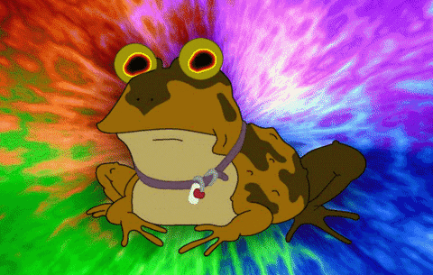

ovvero: come guardare i suoni senza farsi del male
Questo aggeggio è un oscilloscopio analogico simulato. Cioè quella roba con lo schermo verde che nei film appare sempre nel momento in cui il protagonista capisce qualcosa di molto importante sull'elettricità.
Qui non capirai niente di importante. Però i disegni sono belli.
Ipnoscopio nasce da un progetto di sperimentazione sonora portato avanti da LabOttega, un galeone pirata ormeggiato nel cuore di Bologna. LabOttega non solca i mari — solca le frequenze. E ogni tanto si perde nelle basse.
Puoi offrire qualcosa a LabOttega. Un caffè, una cena, un galeone nuovo. Tutto fa brodo.
OFFRICI QUALCOSA
A L'IPNOROSPO.
Lui ci guarda. Lui capisce.
Lui vede le frequenze che noi non vediamo.
ALL GLORY TO THE HYPNOTOAD.